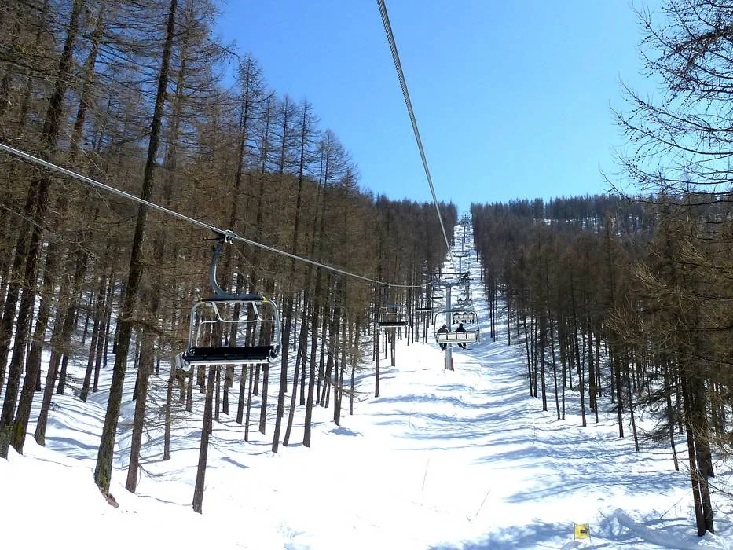
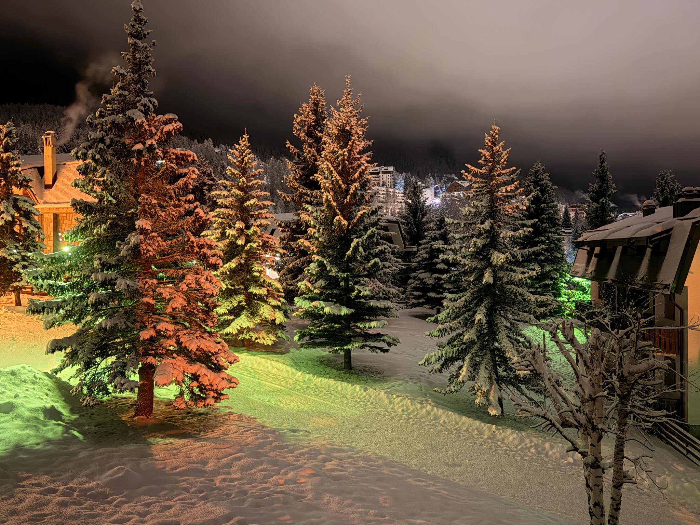

Scegli come vuoi vivere la montagna. Le attività stagionali e gli eventi vanno confermati con gli operatori.

winterThe Perfect Ski Day
Sci da Jouvenceaux o Clotes (5–8 minuti indicativi in auto). Verifica parcheggi e ritrovo scuola sci. Pranzo a Sportinia, après-ski e rientro al caldo.
Informazioni ↗ winter
winterNeve senza sci
Passeggiate invernali, slittino nelle aree consentite, ciaspole con guida e pranzo in quota.
Informazioni ↗ summer
summerTwo Wheels
Bike park di Sauze, e-bike e Strada dell’Assietta. Verifica impianti, difficoltà e restrizioni di accesso. Faure Sport e 3Sixty per il noleggio.
Informazioni ↗summerTennis, padel & fitness
Pin Court a Sauze; scopri anche le strutture di Sestriere e Bardonecchia. Verifica apertura, lezioni e prenotazione.
Informazioni ↗familyFamily summer week
Centri estivi e camp tennis o multisport: Pin Court, PlayOff Sport & Avventura, Snowmaxx. Chiedi se accettano iscrizioni diurne, età e date.
Informazioni ↗familyLittle adventures
Adventure Village, passeggiate, paintball e attività sulla neve: verifica operatori, età minima e apertura.
Informazioni ↗ slow
slowA day at home
Film sulla LG OLED, giochi da tavolo, tisana, caffè, Sonos e luce calda. Il piacere di non avere programmi.
Informazioni ↗slowWellness day
Scopri spa e massaggi a Sauze e Durancia a Montgenèvre. Verifica accesso esterni, età e prenotazione.
Informazioni ↗tasteMountain lunch
Capanna Mollino, Capanna Kind, Chalet Capannina, Ciao Pais e Clot Bourget: scegli il rifugio in base alla pista e alle aperture.
Informazioni ↗natureInto the forest
Gran Bosco di Salbertrand, larici, passeggiate e osservazione rispettosa della fauna. Scegli percorsi adatti e verifica condizioni.
Informazioni ↗
natureUnder the stars
Osserva il cielo da un luogo accessibile e sicuro, oppure dal balcone. Porta abiti caldi e controlla nuvole e fase lunare.
Informazioni ↗cultureA French escape
Montgenèvre e Briançon: passeggiate, fortificazioni Vauban e gastronomia. Verifica documenti e viabilità.
Informazioni ↗cultureBeyond Sauze
Sestriere, Cesana, Claviere, Pragelato, Bardonecchia, Oulx, Usseaux e Valle Argentera: borghi, sport e natura.
Informazioni ↗cultureAlpine heritage
Capanna Mollino, Forte di Exilles e Fenestrelle, architettura alpina e memoria olimpica.
Informazioni ↗summerLegendary roads
Assietta, Colle delle Finestre e Moncenisio in bici o moto, controllando ordinanze, meteo e condizioni stradali.
Informazioni ↗cultureMusic above the clouds
Concerti estivi a Sportinia, musica nei rifugi e spettacoli in paese: consulta il programma ufficiale.
Informazioni ↗tasteShop like a local
Mercati, pane, formaggi e prodotti tipici; consulta l’elenco locale di negozi.
Informazioni ↗winterAprès-ski
Una pausa dopo l’ultima discesa, aperitivo in quota o in paese; controlla orari e ultimo impianto.
Informazioni ↗